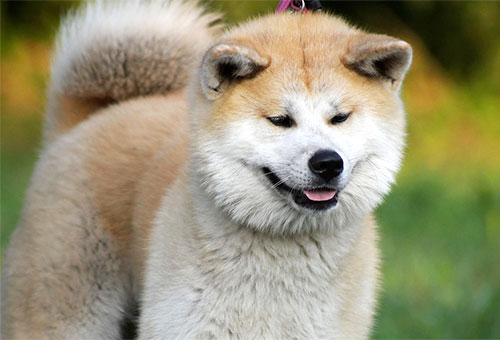
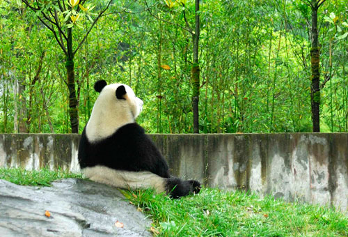

秋田犬
県原産の日本犬の一種。国の天然記念物に指定されています。日本犬種のうち唯一の大型犬種です。
三毛猫

一般的に白・茶色・黒の3色で短毛の日本猫です。白・茶色・こげ茶のものを「キジ三毛」、縞模様（トラネコ）との混合のものを「縞三毛（しまみけ）」と特に分けて呼ぶことがあります。
パンダ
ネコ目（食肉目）に属するジャイアントパンダ（クマ科）とレッサーパンダ（レッサーパンダ科）の2種の総称です。熊猫（シュウマオ）とも。ただし単にパンダといった場合、ジャイアントパンダのことを指すことが多いようです。